Mariehamn3
1Nabbens våtmark
Mariehamns första återskapade våtmark, anlagd vid Nabben på Slemmerns strand. Här går vandringsvägar med informationstavlor tätt intill växt- och djurlivet — ett lättillgängligt område för rekreation, fågelskådning och naturkunskap, där gäddyngel också sätts ut om våren.
- Terräng
- Lätt (spänger/träramper)
Källa: mariehamn.ax · Läge: Visit Åland (Nabbens badplats)
2Sjöfartspromenaden
En skyltad stadsvandring från Västra hamnen till torget i Mariehamn. Längs vägen berättar informationsskyltar om stadens sjöfartshistoria och bebyggelsen — en lätt promenad som passar att kombinera med besök på sjöfartsmuseet och Pommern.
- Terräng
- Lätt (stadspromenad)
- Markering
- Informationsskyltar längs skyltad rutt
Källa: mariehamn.ax (PDF) · Läge: Visit Åland (Ålands sjöfartsmuseum)
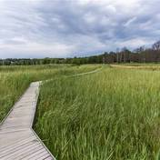
3Mariehamn runt
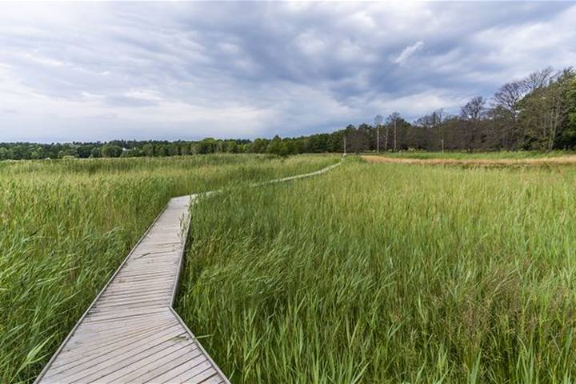
Småbåtshamnar, stränder och färjor
En runda längs båda stränderna med skärgårdskänsla mitt i stan. Västsidan är kuperad med klippor, trappor och träramper. Här ser du färjorna på nära håll och lotsplatsen Kobba Klintar i hamninloppet.
Östsidan är låglänt med småbåtshamnar, Tullarnas äng och badplatserna Lilla Holmen, Gröna udden och Nabben. Vid Nabben går stigen på träramper över en anlagd våtmark. Mellan sidorna följer du gator.
- Start
- Parkeringen vid Nabben
- Terräng
- Lätt. Trottoar, asfalt och promenadväg, ställvis trappor och träramper
- Markering
- Stolpar med vitmålade toppar och vita band på lyktstolpar och träd
Källa: Visit Åland · Läge: Visit Åland, sträckning från landskapsregeringens ledkarta
Jomala5
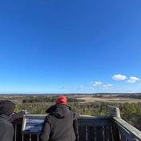
4Ingbyberget (Ingbybergen)
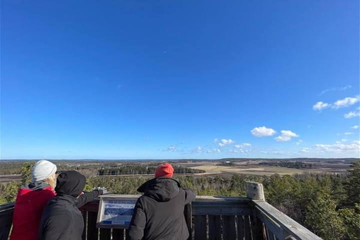
Grotta, långväga utsikt och forntida lämningar
Stigen går upp på berget genom en imponerande spricka i en förkastningsbrant. En avstickare leder till Trollkyrkan, en 11 meter djup bergsklyfta där en gumma och hennes ko enligt sägnen gömde sig under Stora ofreden.
På toppen finns rastplats och utsiktstorn, ungefär 60 meter över havet. På vägen passerar du två gravrösen från bronsåldern och den fridlysta stenåkern Knapplarna.
- Start
- Parkering vid Huvudväg 2
- Terräng
- Bergigt. Våta berg kan vara hala
- Markering
- Stolpar med vitmålade toppar
Källa: Visit Åland · Läge: Visit Åland, sträckning från landskapsregeringens ledkarta
5Dalkarby träsk
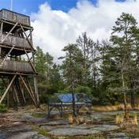
6Kungsö batteriberg
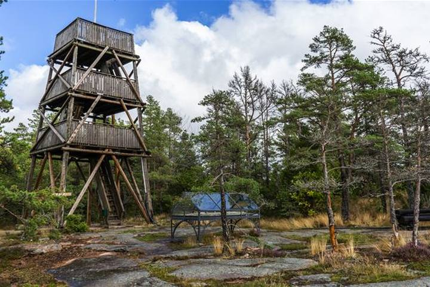
Ryskt kustbatteri med havsutsikt
Kustbatteriet på Dalsberg byggdes 1916–1918 som en del av den ryska försvarslinjen mellan Åland och Estland. En cirka två kilometer lång stenlagd militärväg leder till kaserngrunder, sprängda kanonställningar och ett utsiktstorn mot kusten utanför Mariehamn.
Västerut följer stigen Gottbysundets strand. Österut går en mjuk, mossig stig genom skogen ner till Kungsöfjärden.
- Plats
- Gottby, Jomala
- Terräng
- Skog och berghäll
- Markering
- Gröna stolpar med vitmålade toppar
Källa: Visit Åland · Läge: Visit Åland, sträckning från landskapsregeringens ledkarta
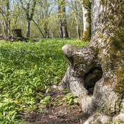
7Ramsholmen
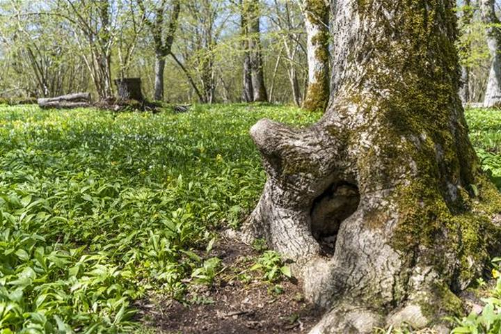
Lövängar med doft av hav och ramslök
Lövängar och strandängar som hör till Ålands artrikaste naturtyper. På våren blommar vitsippor, gullvivor, orkidéer och kungsängsliljor bland hamlade askar och hassellundar. Ramslöken har troligen gett platsen dess namn.
Ängarna slås på traditionellt sätt i juli. Torpfjärden öster om reservatet är ett av Ålands finaste fågelområden. Stigen går delvis över en privat tomt, så visa hänsyn.
- Terräng
- Lätt, blött vissa årstider
- Markering
- Stolpar med vitmålade toppar
- Bra att veta
- Betesdjur maj–oktober, hundar i koppel
Källa: Visit Åland · Läge: Visit Åland, sträckning från landskapsregeringens ledkarta
8Kobba Klintar
Den gamla lotsstationen vid inloppet till Mariehamn, som sommartid nås med turbåten Fiskelyckan från Västra hamnen eller med egen båt. På skären strövar man mellan lotsstugan från 1862, lotshuset från 1910 med mistlur och den vita båken med panoramafönster mot Ålands hav — här passerar de stora fartygen på nära håll, och sommartid finns café i lotsstugan.
Nås med egen båt, båttaxi eller sommartid med turbåt.
- Terräng
- Lätt (klippig skärgårdsterräng)
Källa: visitaland.com · Läge: OpenStreetMap (ön Kobba Klintar)
Eckerö6
9Enskär
Enskär (Emskär) i Eckerö är Ålands och Finlands västligaste bosättning — en 82 hektar stor ö, 1,5 km lång, med en fast bosatt. På öns östra sida, cirka 25 meter från stranden, finns en jungfrudans (stenlabyrint) som enligt traditionen byggdes 1784 av en fartygsbesättning i väntan på tjänlig vind. Inga belagda uppgifter om markerad vandringsled hittades.
Nås med egen båt, båttaxi eller sommartid med turbåt.
Källa: sv.wikipedia.org · Läge: OpenStreetMap (ön Emskär)
10Geostigen
En natur- och geologistig som startar vid Ålands Jakt- och fiskemuseum i Käringsund och leder ut mot inloppet till Käringsund. Längs vägen visas olika bergarter — en kombination av naturupplevelse, geologi och historia i det gamla fiskeläget med sina sjöbodar.
Källa: visitaland.com · Läge: OpenStreetMap (Ålands jakt- och fiskemuseum)
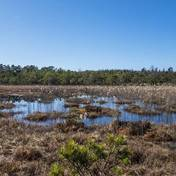
11Träsket
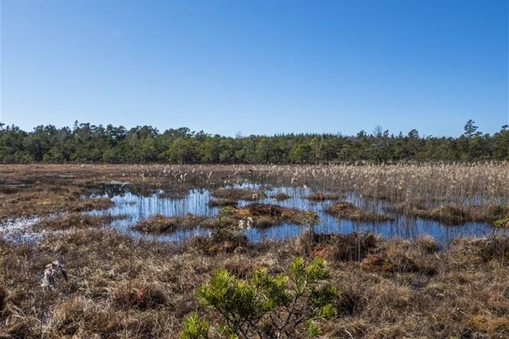
Myrmarkskomplex med variation
Naturreservat och Natura 2000-område med en mosaik av kärr, öppna vattenspeglar och rismossar. Här finns rikkärr, fattigkärr, skogskärr och tallkärr som glider över i varandra, med små partier av hällmark emellan.
Floran är kalkgynnad med bland annat den starkt hotade näbbstarren och orkidéer som sumpnycklar och myggblomster. Tranor häckar i reservatet och skogen runt myren är delvis urskogsartad.
- Terräng
- Medel, omväxlande underlag med berg
- Markering
- Stolpar med vitmålade toppar och vitmålade stenar
Källa: Visit Åland · Läge: Visit Åland, sträckning från landskapsregeringens ledkarta
•Lassas-Långnäs
Strandnära och lokalhistoria
En flack stig med två korta stigningar runt en udde i Kyrksundet. Den går mest ett par meter från stranden, över en strandäng med björkar, spångar och genom ett skogsparti.
På kobben Antons grund finns rastplats med bord och grill. På andra sidan viken syns lämningar efter en flygstation från första världskriget och vindkraftverk från 2021.
- Plats
- Kyrksundet, Eckerö
- Terräng
- Varierande, steniga partier. Blött vid högvatten
- Markering
- Stolpar med vitmålade toppar
Källa: Visit Åland · Läge: Visit Åland, sträckning från landskapsregeringens ledkarta · Låg tidigare under Lemland.
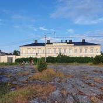
•Eckerö promenad 1
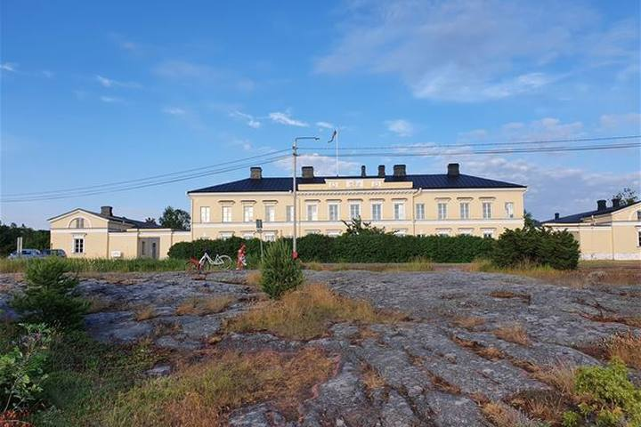
Storby
Starta vid fiskrökeriet på Gamla Käringsundsvägen och gå förbi Jakt- och fiskemuseet. Ta naturstigen mot Berghamn och fortsätt förbi Post- och tullhuset och Sandvikens badstrand med klippbad, tillbaka förbi Eckerö hotell, Eckeröhallen och curlinghallen.
- Start
- Fiskrökeriet, Gamla Käringsundsvägen
Källa: Visit Åland · Läge: Visit Åland
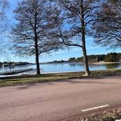
•Eckerö promenad 2
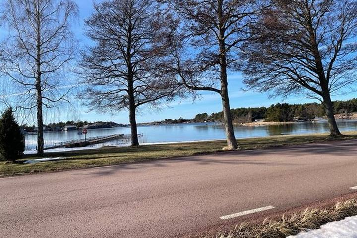
Storby
Starta vid Käringsund Resort och gå upp mot skogen längs Farmvägen bakom stugbyar och campingar fram till Eckerö skola. Ta höger och följ Käringsundsvägen tillbaka ner mot Käringsund.
- Start
- Käringsund Resort & Conference
Källa: Visit Åland · Läge: Visit Åland
Hammarland4
12Kulturstigen vid Sälskärs fyr
En vandringsstig med informationsskyltar tvärs över fyrön Sälskär i Hammarlands ytterskärgård, med berättelser om öns historia. Här står Ålands äldsta havsfyr från 1868 (39 meter, 164 trappsteg till lanterninen), bemannad fram till 1948 och renoverad 2022. På grannön Norra Sälskär finns en stor tordmulekoloni och i vattnen runt ön kan man få se gråsäl. Ön nås endast med båt — under högsäsong går M/S Silvana varje vecka från Skarpnåtö.
Nås med egen båt, båttaxi eller sommartid med turbåt.
- Markering
- Informationsskyltar
Källa: eckerolinjen.se · Läge: OpenStreetMap (ön Sälskär)
13Klintbergens utsiktstorn
Ett utsiktstorn på Klintbergen i Skarpnåtö i norra Hammarland, upptaget i Visit Ålands förteckning över åländska utsiktstorn. Från tornet har man utsikt över den omgivande skärgården. Inga belagda uppgifter om ledens längd eller markering hittades.
Källa: visitaland.com · Läge: Landskapsregeringens karta (utsiktstornet på Sadelinleden)
14Grunne naturbete
15Sälis batteriberg (Sålis)
Ett ryskt kustbatteri från första världskriget på ett berg i Hammarland (kallas även Sålis batteri). En knappt kilometern lång skogsstig leder upp till vaktstugan, repliker av förläggningshus, befästningslämningarna och utsiktstornet med vid utsikt över landskapet. Stigen är ojämn på sina ställen — cykel och barnvagn avråds.
- Terräng
- Lätt–medel (delvis ojämn skogsstig; ej lämplig för barnvagn eller cykel)
Källa: biveros.com · Läge: Landskapsregeringens karta
Geta5
16Havsvidden
Området vid Havsvidden längst norrut på Åland bjuder på röd granitklippor, branta berg och vindpinade tallar med gott om utrymme för promenader och utforskning på klipporna.
Källa: visitaland.com · Läge: Visit Åland (Havsvidden)
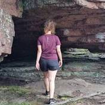
17Grottstigen
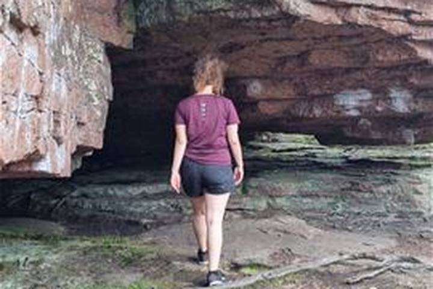
Bergsformationer och martallar
Getabergen når nästan hundra meter över havet. Stigen går över karga berg med knotiga martallar, branter och grottor. I en av grottorna gömde sig folk för ryssarna under Stora ofreden 1714–1721.
På ett ställe bildar berget terrasser som en naturlig amfiteater. Stigen passerar också Djupvik, en smal havsvik med klippstränder. Området är populärt för bouldering.
- Start
- Soltuna, Getabergen
- Terräng
- Svår, tidvis krävande med branta partier. Våta berg kan vara hala
- Markering
- Vitmålade pilar och staplade stenar
Källa: Visit Åland · Läge: Visit Åland, sträckning från landskapsregeringens ledkarta
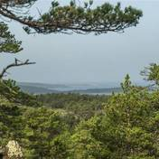
18Trollstigen
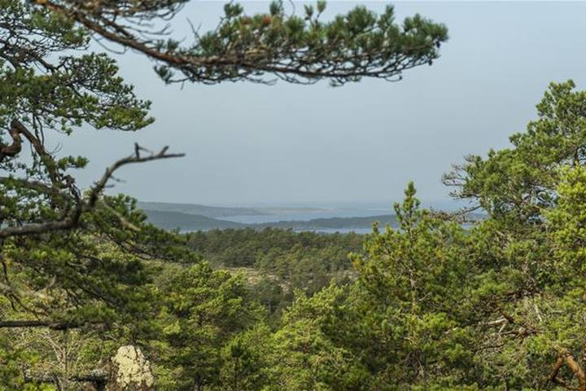
Sagostig för barn
En specialstig för yngre barn över urberget bland martallar, med havsbruset i bakgrunden. Längs stigen berättas sagan om stortrollen, istrollen, jätten Singer och lilla Vill Vallerman, och om naturen på berget.
De yngsta kan behöva hjälp i några brantare partier. Det finns en fin picknickplats längs stigen.
- Start
- Soltuna, samma som Grottstigen
- Terräng
- Lätt, släta berg. Våta berg kan vara hala
- Markering
- Pilar och stenrösen
Källa: Visit Åland · Läge: Visit Åland, sträckning från landskapsregeringens ledkarta
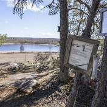
19Medeltidsstigen
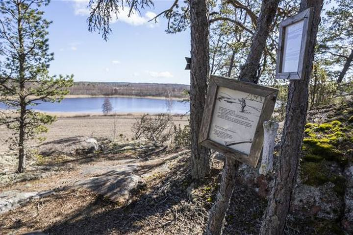
Höggravfält och Stora ofreden
En runda kring ett skogsklätt berg med utsikt över åkrar, ängar och ett träsk. Stigen passerar höggravfältet i Olofsnäs med ett trettiotal gravar från yngre järnåldern.
Skyltar berättar om medeltida fiske, rådjursjakt på 1500-talet och Stora ofreden, när en stor del av ålänningarna flydde till Sverige. Intill stigen ligger en kulturarvsstuga byggd med gamla metoder.
- Terräng
- Medel, lätt kuperat med enbackar och mossig granskog
- Markering
- Stolpar med vitmålade toppar
Källa: Visit Åland · Läge: Visit Åland, sträckning från landskapsregeringens ledkarta
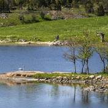
20Höckböleholmen
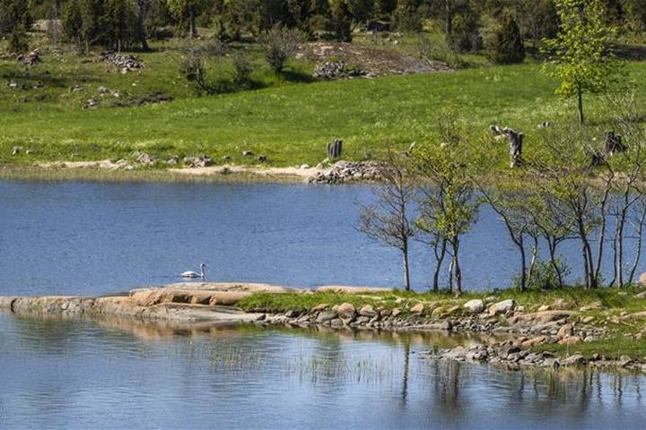
Kungsängsliljornas rike
Naturreservat med lundar, torrängar, strand, sumpskog och hällmarker. På våren blommar blåsippor, vitsippor och ett vilt bestånd av kungsängslilja. På Lastarudden, en gammal lastplats för galeaser, blommar orkidén Adam och Eva i maj.
Asp, lönn, ask, hassel och vildapel gör reservatet vackert även i höstfärger. Fågellivet är rikt med hackspettar, nötkråka och grönsångare.
- Terräng
- Lätt
- Markering
- Stolpar med vitmålade toppar
- Bra att veta
- Betesdjur maj–oktober, hundar i koppel
Källa: Visit Åland · Läge: Visit Åland, sträckning från landskapsregeringens ledkarta
Finström5
21Bergö
22Storberget
Promenad upp till Storbergets utsiktstorn i Finström. Enligt Visit Åland en givande tur med fin utsikt som passar barn.
- Terräng
- Barnvänlig
Källa: visitaland.com · Läge: OpenStreetMap (Storbergets utsiktstorn)
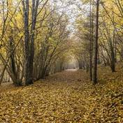
23Prästgårdsnäset
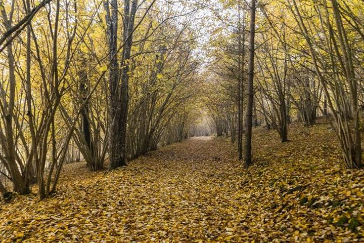
Artrikedom och andlighet i historiska omgivningar
Hassellundar, ask- och ekbackar och strandängar som i alla tider varit Finströms prästgårds betesmark. Betet och den kalkrika jorden har gett en flora med omkring 200 arter.
Vårblomningen i maj är enastående med blåsippor, vitsippor, ramslök, nunneört och vårärt. I albården ovanför strandängarna växer kabbleka.
- Plats
- Pålsböle, Finström
- Terräng
- Lätt, spångar på vissa ställen. Blött vissa årstider
- Markering
- Stolpar med vitmålade toppar
- Bra att veta
- Betesdjur maj–oktober, hundar i koppel
Källa: Visit Åland · Läge: Visit Åland, sträckning från landskapsregeringens ledkarta
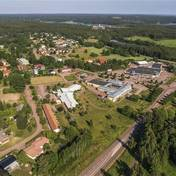
24Godbyrundan
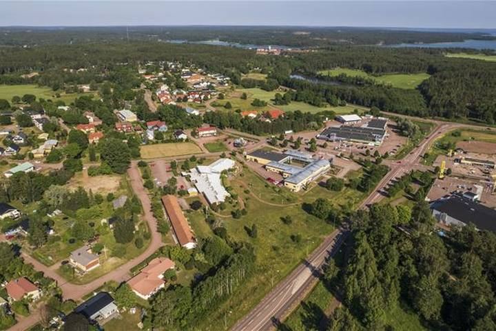
Vidsträckt utsikt och utländska träd
Rundan börjar vid höggravfältet Björkens från yngre järnåldern och slutar vid Kungshögarna från samma tid. Däremellan växlar karga berg med småtallar, trolsk skog med mossiga stenar och en lång åkerkant.
Leden går genom Godby arboretum med jättetuja, douglasgran och silvergran. Från berget vid Färjsundet, med sommarkafé och utsiktstornet Höga C, ser du ut över bygden från 70 meter över havet.
- Start
- Ålands idrottscenter / Godbyhallen
- Terräng
- Medel. Berg, åkerkant, skogsstig och gång- och cykelbana
- Markering
- Stolpar med vitmålade toppar
Källa: Visit Åland · Läge: Visit Åland, sträckning från landskapsregeringens ledkarta
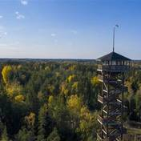
25Godby arboretum
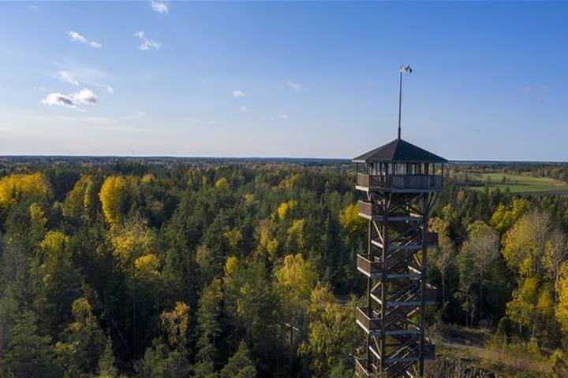
Utländska exoter i åländsk natur
En promenadstig i lättgången skog med ett antal utländska trädslag, de flesta planterade på 1930-talet. Skyltar längs stigen berättar vilka träd du ser.
- Plats
- Godby, Finström
- Terräng
- Lätt
- Markering
- Stolpar med vitmålade toppar
Källa: Visit Åland · Läge: Visit Åland, sträckning från landskapsregeringens ledkarta
Saltvik5
26Borgdalsberget
Målet är fornborgen på Borgdalsberget (Näsborgen) vid Toböle träsk: en brant klippudde som reser sig cirka 40 meter över sjön, försvarad av upp till två meter höga stenvallar i flera rader och med en borggård på en hektar.
Källa: fi.wikipedia.org · Läge: OpenStreetMap (Toböle träsk), fornborgens exakta läge osäkert
27Kasberget
Utkiksplats på Ålands näst högsta berg
Kasberget är 119 meter högt och Ålands näst högsta berg. För 10 000 år sedan stack toppen upp som ett skär ur havet, och hit kom de första människorna för omkring 6000 år sedan.
Stigen går vid sidan av naturreservatet Åsgårda stenåkrar upp till toppen, där det finns stengrunder efter ett trillingtorn och vid utsikt. Längs vägen ser du stenkummel och fint formade martallar.
- Terräng
- Stenig, lite brant mot toppen. Blöt och hal vår och höst
- Markering
- Vita band runt träd
Källa: Visit Åland · Läge: Visit Åland, sträckning från landskapsregeringens ledkarta
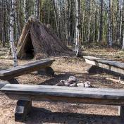
28Långbergen
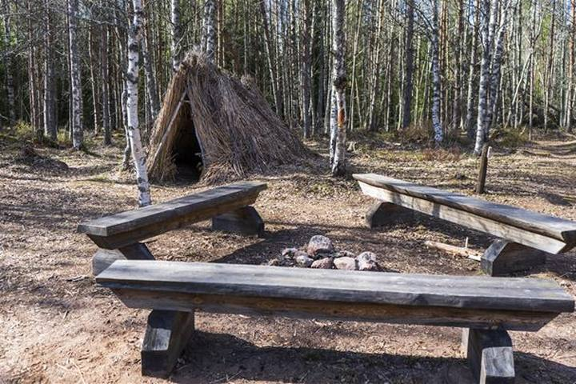
Vildmark och stenålder
Från Vargstensslätten går du upp på Långbergen, drygt 100 meter över havet, där säljägare landade för över 5000 år sedan när berget var en ö. Längs stigen syns hur strandlinjen flyttat sig sedan istiden.
Från toppen ser du Orrdalsklint och Norrhavet. Stigen fortsätter till en återskapad stenåldersby och Östra Jansmyra, en av Ålands äldsta boplatser.
- Start
- Vargstensslätten
- Terräng
- Skog och berg, kan vara halt
- Markering
- Målade stenar
Källa: Visit Åland · Läge: Visit Åland, sträckning från landskapsregeringens ledkarta
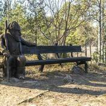
29Borgboda
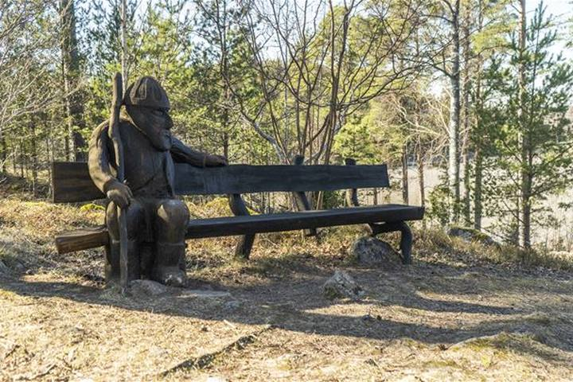
Ålands största fornborg och Idas stuga
Fornminnesområde med lämningar från bronsålder till medeltid. Fornborgen Borge omgavs för tusen år sedan av vatten på tre sidor och bevakade en farled mellan Kvarnboviken och Kyrksundet. I dag vaktar snidade träfigurer området.
Stigen slingrar sig genom beteshagar upp på berget. Idas stuga är ett minnesmärke över de egendomslösa: pigan Ida Jansson bodde här med sin son 1924–1966. Stugan är alltid öppen.
- Plats
- Borgboda, Saltvik
- Terräng
- Lätt, trappor
- Markering
- Stolpar med vitmålade toppar
- Bra att veta
- Betesdjur maj–oktober, hundar i koppel
Källa: Visit Åland · Läge: Visit Åland, sträckning från landskapsregeringens ledkarta
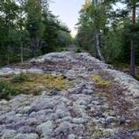
•Boxö batteri & grotta
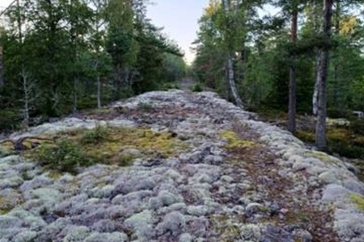
Ö-vandring längs historiska fotspår
Kustbatteriet på Boxö var den största ryska anläggningen på Åland under första världskriget, med kraftiga kanoner och egen järnväg upp från hamnen. Det sprängdes 1919.
Stigen går från hamnen längs batterivägen upp till ruinerna och vidare till Rövarkulan, Ålands största grotta, som är åtta meter bred och tolv meter djup. Sedan fortsätter den till Träsket, norra stranden och tillbaka längs västra sidan. Ön är naturreservat och nås med båt från Hamnsundet.
Nås med egen båt, båttaxi eller sommartid med turbåt.
- Plats
- Boxö, Saltvik
- Terräng
- Skog och berg
- Markering
- Skyltar, vitmålade stenar och vita band runt träd
Källa: Visit Åland · Läge: Visit Åland
Sund8
30Svelandsberget
Leden går upp till fornborgen Svelandsberget i Brändbolstad, en av Ålands forntida försvarsanläggningar. Uppe på berget syns rester av åtta stenmurar som skyddade den flackare sydsluttningen, medan branta stup försvarar de övriga sidorna.
Källa: fi.wikipedia.org · Läge: OpenStreetMap (byn Brändbolstad), fornborgens exakta läge osäkert
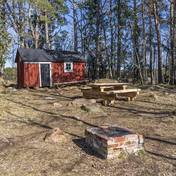
31Norra Strandstigen
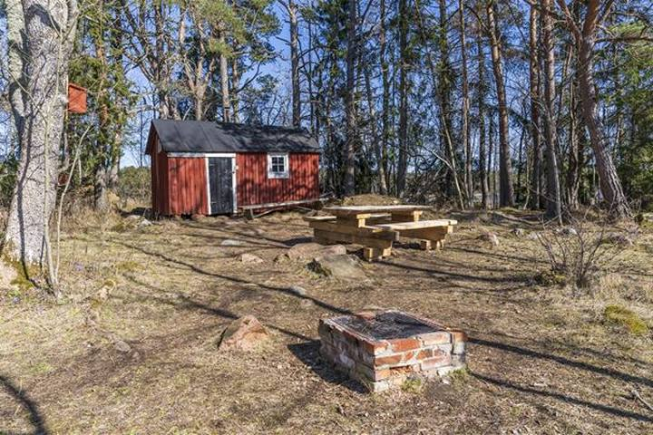
Norra Strandstigen är en av tre stigar i Stornäsets strövområde söder om Kastelholms slott. Leden går genom omväxlande skog och längs stranden, och kan kombineras med de andra stigarna till rundor på 2,5–5 km.
- Terräng
- Lätt, några krävande partier
- Markering
- Stolpar med vitmålade toppar
Källa: Ålandstidningen 24/5 2024 (Fastighetsverket) · Läge: Rastplats vid norra stranden i Stornäsets ledsystem (osäker koppling)
32Skogsstigen
Skogsalternativet i Stornäsets ledsystem
Skogsstigen börjar i bokskogen från början av 1930-talet och går sedan genom omväxlande skog, från lundar med ädla lövträd till karg hällmarkstallskog. Längs stigen står namnskyltade utländska trädslag.
- Start
- Parkeringen vid Stornäset
- Terräng
- Lätt, några krävande partier
- Markering
- Stolpar med vitmålade toppar
Källa: Visit Åland · Läge: Visit Åland
33Strandstigen
Längs Lumparns stränder
Strandstigen börjar också i bokskogen och följer sedan Lumparns stränder med utsikt över Färjsundet och Slottssundet. Den leder till en gammal fiskekoja på Småholmarna och går hemåt längs Tjudnäs träsk. Bra för en badpaus.
- Start
- Parkeringen vid Stornäset
- Terräng
- Lätt, några krävande partier
- Markering
- Stolpar med vitmålade toppar
Källa: Visit Åland · Läge: Visit Åland
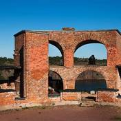
34Bomarsund
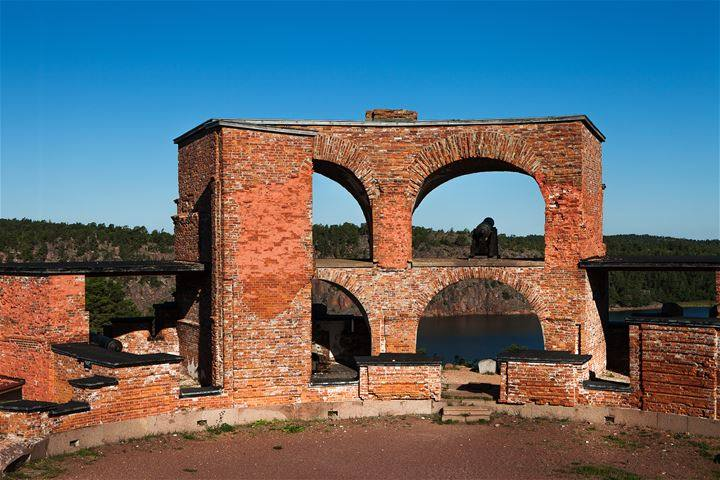
Det ryska imperiets utpost
Vandringen går genom fästningsområdet där Ryssland byggde sin västligaste utpost, som föll 1854. Du ser ruiner och husgrunder av militära anläggningar och bebyggelse, och delar som aldrig hann byggas.
Terrängen är ojämn med relativt branta sluttningar och en cirka 35 meter lång trappa, men bjuder på fina utsiktsplatser.
- Plats
- Bomarsund, Sund
- Terräng
- Lätt till medelsvår, branta sluttningar och en lång trappa
- Markering
- Blå markeringar på stolpar och träd
Källa: Visit Åland · Läge: Visit Åland, sträckning från landskapsregeringens ledkarta
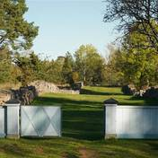
35Prästö kulturstig
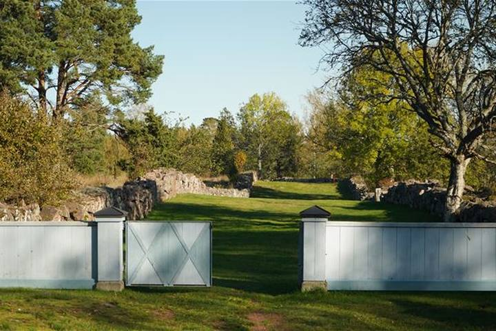
De dödas ö
På Prästö vilar ryska soldater, civila och krigsfångar från tiden då Bomarsunds fästning byggdes. Begravningsplatserna är grekisk-ortodoxa, muslimska, lutherska, katolska och judiska, och ett femtiotal gravstenar finns kvar.
Stigen passerar platsen för militärsjukhuset, ryska telegrafen och Doniken, två av få kvarvarande ryska byggnader på Åland. Den går mest på grusvägar och stigar genom kulturmark.
- Start
- Ryska telegrafen
- Tid
- 2–3 timmar
- Terräng
- Lätt, två korta bergspassager
- Infotavlor
- Ja
Källa: Visit Åland · Läge: Visit Åland, sträckning från landskapsregeringens ledkarta
•Stornäset
Skogsvandring i rofylld omgivning
Kastelholms Skogsstig och Strandstig börjar båda i den mäktiga bokskogen söder om Kastelholm. Därefter väljer du Strandstigen (ca 5 km) längs Lumparn eller den kortare Skogsstigen (ca 2,5 km).
- Plats
- Kastelholm, Sund
- Terräng
- Lätt, några krävande partier
- Markering
- Stolpar med vitmålade toppar
Källa: Visit Åland · Läge: Visit Åland, sträckning från landskapsregeringens ledkarta
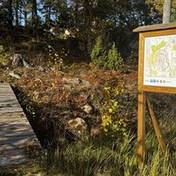
•Lillnäsberget
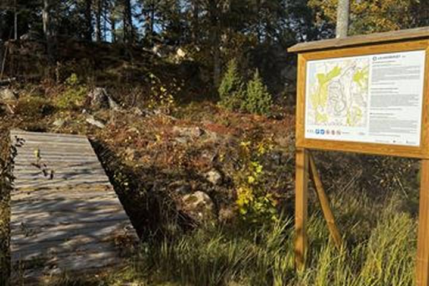
Skogsfenomen på kunglig mark
Marken har hört till Kastelholms kungsgård sedan Gustav Vasas tid och blev naturreservat 1982. Stigen går genom kuperad blandskog och sedan brant upp genom Kleven, med granurskog och stora mossiga granar.
Uppe på krönet går stigen över känslig, lavklädd hällmark till en utsiktspunkt ovanför förkastningsbranten. Här växer urgamla martallar, och stigen passerar tre bronsåldersrösen.
- Plats
- Kastelholm, Sund
- Terräng
- Skog och berg, bitvis ganska brant
- Markering
- Stolpar med vitmålade toppar och vita band runt träd
Källa: Visit Åland · Läge: Visit Åland
Vårdö2
36Horsholma-Mickelsö
Leden går på ön Töftö i sydvästra Vårdö, över Horsholma som förbinder huvudön med Mickelsö i söder. Området bjuder på typisk åländsk skärgårdsnatur med havet nära.
Färja dit – se tidtabell hos Ålandstrafiken.
Källa: sv.wikipedia.org · Läge: OpenStreetMap (Horsholm, Töftö)
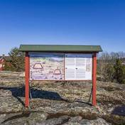
37Lövö naturstig
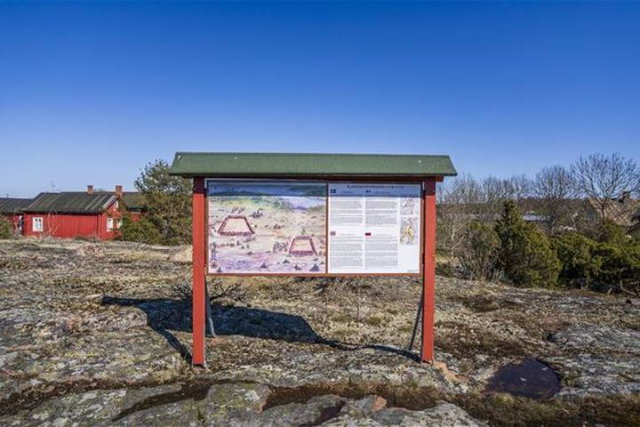
Fredskongress och ryska bakugnar
I byn Lövö hölls 1718–1719 en fredskongress mellan Karl XII:s Sverige och Peter den stores Ryssland. Ett flyttblock markerade gränsen mellan det svenska och det ryska lägret.
Stigen går förbi åkrar och ängar och genom björk- och tallskog med rester av ryska bakugnar. Vid Sikören finns ett fågeltorn, och i Sandösund syns vid lågvatten resterna av barken Altai, sänkt 1933.
Färja dit – se tidtabell hos Ålandstrafiken.
- Terräng
- Medel, berg, skogsstigar och grusväg. Våta berg kan vara hala
- Markering
- Stolpar med vitmålade toppar och vitmålade stenar
Källa: Visit Åland · Läge: Visit Åland, sträckning från landskapsregeringens ledkarta
Lemland5
38Jungfruskär
Idegranens urskog
Lilla Jungfruskär söder om Mariehamn har en kort slinga genom urskog av idegran. Ön nås med egen båt eller båttaxi.
Nås med egen båt, båttaxi eller sommartid med turbåt.
- Terräng
- Lätt
Källa: Visit Åland · Läge: Visit Åland, sträckning från landskapsregeringens ledkarta
39Nåtö
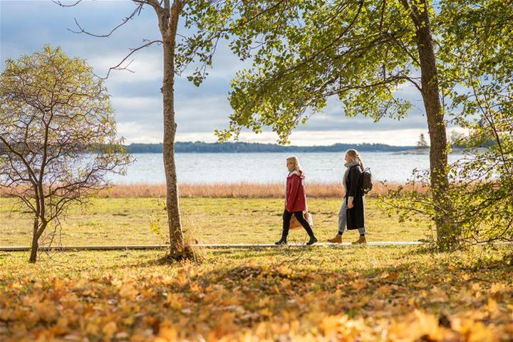
Kulturlandskap med vårens blomsterprakt
Nåtö är ett lövängsområde, en av Ålands artrikaste naturtyper. Här finns blomsterängar och beteshagar med rika orkidébestånd, unika strandängar och svala hassellundar.
Ängarna slås på traditionellt vis i juli. Fågellivet är rikt med bland annat nötkråka och många hålhäckande arter.
- Plats
- Nåtö, Lemland
- Terräng
- Lätt, korta bergspassager och spångar. Blött vissa årstider
- Markering
- Stolpar med vitmålade toppar
- Bra att veta
- Betesdjur maj–oktober, hundar i koppel
Källa: Visit Åland · Läge: Visit Åland, sträckning från landskapsregeringens ledkarta
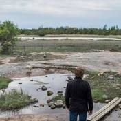
40Järsö
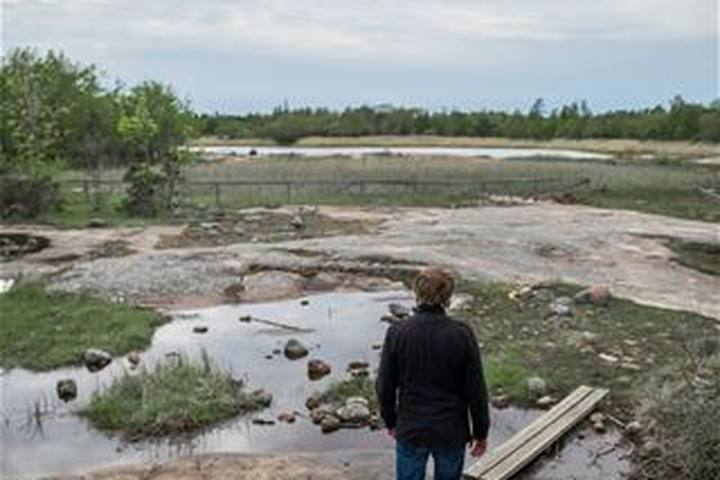
Klipphällar, havsutsikt och löväng
Den vita slingan går runt en udde med berghällar och fin utsikt över farleden där färjorna mellan Sverige, Åland och Finland går. Du kan gå ner till klipphällarna vid stranden.
En röd och en blå slinga går genom en artrik löväng med hamlade lövträd och tät hassel. Längs den röda ligger en liten sjö.
- Terräng
- Medel, skogsstig och berg. Våta berg kan vara hala
- Markering
- Stolpar med vita kryss. Extraslingorna har röda och blå kryss
Källa: Visit Åland · Läge: Visit Åland, sträckning från landskapsregeringens ledkarta
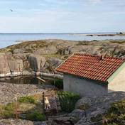
41Stora Båtskär
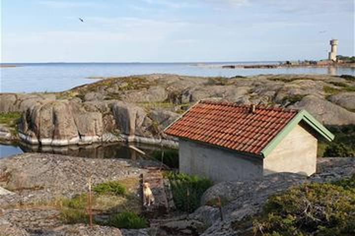
Människan i havsbandet
En öppen holme i ytterskärgården. Ådvandringen är en stig med åtta skyltade stationer om livet i havsbandet och om sjöfåglarna som återvänder hit år efter år. Spångarna anlades för vindkraftverken.
Håll dig på anvisade stigar så att du inte stör häckande fåglar. Ön nås med båt.
Nås med egen båt, båttaxi eller sommartid med turbåt.
- Terräng
- Lätt, spångar
- Markering
- Informationsskyltar
Källa: Visit Åland · Läge: Visit Åland, sträckning från landskapsregeringens ledkarta
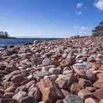
42Herröskatan
Badklippor och havsörnar
Naturreservat vid fasta Ålands sydligaste spets med slåtterängar, lundar och artrika ängsbackar. Här växer bland annat vit skogslilja, Sankt Pers nycklar och den sällsynta nakna jungfrun.
Från fågeltornet ser du ofta havsörnar. Befästningsruinerna härstammar från den ryska tiden och krigsåren 1939–1945.
- Plats
- Herröskatan, Lemland
- Terräng
- Lätt, berghäll
- Markering
- Stolpar med vitmålade toppar
- Bra att veta
- Betesdjur maj–oktober, hundar i koppel
Källa: Visit Åland · Läge: Visit Åland, sträckning från landskapsregeringens ledkarta
Föglö4
43Björkör
Skärgårdshemman från 1700-talet
Björkör söder om Föglö har ett traditionellt skärgårdshemman från 1700-talet i ursprungligt skick, ägt av landskapsregeringen. Ön är naturreservat och minnesmärke.
Det finns en stadig brygga på södra sidan, en vandringsstig runt ön och ett utsiktstorn med milsvid utsikt. Ön nås med egen båt eller båttaxi.
Nås med egen båt, båttaxi eller sommartid med turbåt.
- Terräng
- Medel, omväxlande underlag med berg och träd
- Markering
- Stolpar med vitmålade toppar och vitmålade stenar
Källa: Visit Åland · Läge: Visit Åland, sträckning från landskapsregeringens ledkarta
44Enighetens naturstig
Inga publicerade uppgifter om leden hittades.
Färja dit – se tidtabell hos Ålandstrafiken.
Läge: OpenStreetMap (Enigheten i Degerby), stigens läge osäkert
45Jyddö vandringsled
Sjöfåglar och fjärilar
Omväxlande landskap med öppna ytor, hassellundar, slåtterängar och lövskog. Stigen är kuperad, passerar en mäktig bergsbrant och går längs stränder och förbi beten.
Chansen att se havsörn är stor. Det finns ett tio meter högt utsiktstorn, flera rastbord och en slogbod med eldstad. Stigen kan kortas av.
Färja dit – se tidtabell hos Ålandstrafiken.
- Terräng
- Medel, delvis kuperad
- Markering
- Stolpar med vitmålade toppar och vitmålade stenar
Källa: Visit Åland · Läge: Visit Åland, sträckning från landskapsregeringens ledkarta
46Hastersboda vandringsled
Havsstränder och trolsk barrskog
Först klippor och steniga havsstränder, sedan gammal orörd barrskog tillbaka till start. Skyltar berättar om fiske, jordbruk och skogsbruk i skärgården förr.
Stigen passerar strandängar med betande djur och ett fågeltorn med utsikt mot Kökar. Havsörn häckar i området.
Färja dit – se tidtabell hos Ålandstrafiken.
- Terräng
- Medel, klippor och skog
- Markering
- Stolpar med vitmålade toppar och vitmålade stenar
Källa: Visit Åland · Läge: Visit Åland, sträckning från landskapsregeringens ledkarta
Kökar5
47Östra Långskär
Östra Långskär är ett naturreservat norr om Kökars huvudö med säregna sand- och grusformationer och rikt växt- och djurliv. Ön nås endast med egen båt och landstigning är begränsad 1 april–15 juli; någon markerad led kunde inte beläggas.
Nås med egen båt, båttaxi eller sommartid med turbåt.
Källa: sv.wikipedia.org · Läge: OpenStreetMap (ön Östra Långskär)
48Hamnös kulturstig
Kulturstig på Hamnö som passerar öns viktigaste fornlämningar: ruinerna av 1400-talets franciskanerkloster, S:ta Anna kyrka, sjöfararkapellet och de medeltida hamnarna. Stigen startar lämpligast vid franciskanerkapellet med dess utställning om Hamnös historia.
Färja dit – se tidtabell hos Ålandstrafiken.
Källa: kokar.ax · Läge: Visit Åland (Kökar kyrka på Hamnö)
49Kökar Kalen
Bronsålder och krigsminnen
Kalen var den del av Kökar som först steg ur havet efter istiden. Här finns Tellmossberget och bronsåldersboplatsen Otterböte, där över 20 000 krukskärvor grävts fram.
Nära sjöbevakningsstationen syns rester av ett ryskt kustbatteri från första världskriget och finska befästningar från 1939–1945. Naturen bjuder på betesängar, kärr, vildvuxna dalar och mäktig havsutsikt.
Färja dit – se tidtabell hos Ålandstrafiken.
- Terräng
- Medel/svår, kuperat och mest berg. Våta berg kan vara hala
- Markering
- Vitmålade stenar
Källa: Visit Åland · Läge: Visit Åland, sträckning från landskapsregeringens ledkarta
50Klobbars naturstig
Kort naturstig med start vid Klobbars gästhem i Hellsö på norra Kökar. Lämplig som lugn promenad i omgivningarna kring boendet.
Färja dit – se tidtabell hos Ålandstrafiken.
Källa: en.wikivoyage.org · Läge: OpenStreetMap (Klobbars gästhem)
51Källskär
Källskär i Kökars ytterskärgård är ett omtyckt utflyktsmål som nås med guidade båtturer från Karlby/Brudhäll sommartid – ingen vandringsled i egentlig mening. Ön är känd för sina slipade hällformationer från istiden samt den fantasifulla trädgården och Merkuriusstatyn skapade av baron Göran Åkerhielm.
Nås med egen båt, båttaxi eller sommartid med turbåt.
Källa: aland.travel · Läge: OpenStreetMap (ön Källskär)
Sottunga4
52S:t Olofs vandringsled
Rundslinga som börjar och slutar i Sottunga färjläge och tar vandraren genom öns förflutna – över västra bergen, genom Söderbyn och bycentrum tillbaka till hamnen. Leden är en del av pilgrimsleden S:t Olofs sjöled; skyltar berättar bland annat om hamnområdets och kyrkans dramatiska historia under stora ofreden.
Färja dit – se tidtabell hos Ålandstrafiken.
Källa: visitaland.com · Läge: Hamnen i Sottunga (landskapsregeringens karta)
53Hamnen och kyrkan
Kort rundslinga som börjar och slutar vid färjfästet och gästhamnen, med informationsskyltar om Sottungas historia. Leden passerar bland annat den lilla röda träkyrkan från 1730, ett stenkast från hamnen.
Färja dit – se tidtabell hos Ålandstrafiken.
- Markering
- Informationsskyltar
Källa: aland.travel · Läge: Visit Åland (Sottunga kyrka)
54Skogsrundan
Havsutsikt och myrmark
Stigen går förbi Sottunga träkyrka från 1730 och in i tallskogen. Den fortsätter längs bergen på öns västra sida med utsikt över skärgården och en rastplats.
Efter bergen går den runt en myr med knotiga tallar och ängsull, och tillbaka till gästhamnen längs byvägen.
Färja dit – se tidtabell hos Ålandstrafiken.
- Start
- Gästhamnen
- Terräng
- Lätt, byväg, skogsstig och klippor. Våta berg kan vara hala
- Markering
- Stolpar med vitmålade toppar, delvis S:t Olofs sjöled (röda toppar med sigill)
Källa: Visit Åland · Läge: Visit Åland, sträckning från landskapsregeringens ledkarta
55Byrundan
Byvandring i Finlands minsta kommun
Gårdarna ligger ungefär där de låg under tidig medeltid, då ett sund gick genom ön. I dag delas byn i Södra och Norra byn, med gamla uthus, lummiga trädgårdar och en kvarvarande väderkvarn.
Stigen passerar gamla skolan från 1903, i dag hembygdsmuseum, prästgården från 1899 och midsommarstången.
Färja dit – se tidtabell hos Ålandstrafiken.
- Terräng
- Lätt, grusväg
- Markering
- Stolpar med vitmålade toppar, delvis S:t Olofs sjöled
Källa: Visit Åland · Läge: Visit Åland, sträckning från landskapsregeringens ledkarta
Kumlinge3
56Barö (Bärö)
Inga publicerade uppgifter om någon markerad led på Barö hittades.
Färja dit – se tidtabell hos Ålandstrafiken.
Läge: OpenStreetMap (ön Bärö)
57Kumlinge-åttan
Medeltidskyrka och skärgårdsnatur
En åttformad led genom lövskog och blandskog, över åkrar och ut på karga berg med ljung och enris. Spångar leder över en låglänt strand vid en havsvik.
Skyltar berättar om S:ta Anna kyrka, midsommarstången, apoteket, sjukstugan och Kumlingeslaget 1808. En del av leden följer den gamla postvägen.
Färja dit – se tidtabell hos Ålandstrafiken.
- Terräng
- Medel, berg, skogsstig och landsväg. Våta berg kan vara hala
- Markering
- Stolpar med vitmålade toppar, vitmålade stenar och trädstammar
Källa: Visit Åland · Läge: Visit Åland, sträckning från landskapsregeringens ledkarta
58Seglinge vandringsled (Stangnäs–Sandvik)
Jättegrytor och klippstrand
Karg skärgårdsnatur med ljung och enris, partier av löv- och barrskog och spångar över sank mark. I början passerar du bysmedjan, en väderkvarn och Västersjö.
I Stangnäs finns jättegrytor från istiden, se upp för den stora. Längs västra stranden är utsikten över Delet storslagen men klipphällarna bitvis krävande. För en kortare tur kan du gå bysmedjan–Stangnäs eller bysmedjan–Sandvik och tillbaka.
Färja dit – se tidtabell hos Ålandstrafiken.
- Start
- Bysmedjan
- Terräng
- Medel, ställvis svår. Våta berg kan vara hala
- Markering
- Stolpar med vitmålade toppar, vitmålade stenar och vitmålade måsar
Källa: Visit Åland · Läge: Visit Åland, sträckning från landskapsregeringens ledkarta
Brändö5
59Jurmo
Skärgårdsanda med havsbad
Stigen går sakta uppför genom gles tallskog, med en avstickare till ett utsiktstorn. Den passerar ängar där highland cattle betar.
Vid en stenstrand med klippor kan du äta matsäck och bada i Skiftet, fjärden på gränsen mellan Åland och Finland. Håll utkik efter havsörn och sjöfågel.
Färja dit – se tidtabell hos Ålandstrafiken.
- Terräng
- Medelsvår, något kuperat med landsväg och skogsstig
- Markering
- Vitmålade blommor på träd och stenar
Källa: Visit Åland · Läge: Visit Åland, sträckning från landskapsregeringens ledkarta
60Jåsholm
Lövträd och fågelliv
Karga berg och små skogspartier med tall, en och lövträd som björk, ask, lönn och asp. Fågellivet är rikt med havsörn, svanar, sjöfåglar och den sällsynta vitryggiga hackspetten.
Älg, rådjur och vitsvanshjort finns på holmen. Det finns bra picknickplatser, och sommartid kan får beta här.
Färja dit – se tidtabell hos Ålandstrafiken.
- Terräng
- Medel, klippor, lövskog och strandängar. Våta berg kan vara hala
- Markering
- Stolpar med vitmålade toppar
Källa: Visit Åland · Läge: Visit Åland, sträckning från landskapsregeringens ledkarta
61Torsholm
Naturstig i byn Torsholma med utsiktstorn (Hemvärnstornet) som bjuder på vidsträckt utsikt över Skiftet och skärgården – ett bra ställe för fågelskådning.
Färja dit – se tidtabell hos Ålandstrafiken.
Källa: brando.ax (PDF) · Läge: OpenStreetMap (byn Torsholma)
62Lappo
Skärgårdsnatur och midsommarstång
Lingonris i trollskog, karga klippor med vindpinade enar och havet nära hela tiden. Stigen har tvära böjar, så följ markeringarna.
Du passerar Lappo discgolfpark med rastbord och havsutsikt, Vårdberget med öns midsommarstång och hamnen med Skärgårdsmuseets gamla bruksbåtar.
Färja dit – se tidtabell hos Ålandstrafiken.
- Terräng
- Medel, landsväg, skogsstig och berg. Våta berg kan vara hala
- Markering
- Stolpar med vitmålade toppar och vitmålade stenar
Källa: Visit Åland · Läge: Visit Åland, sträckning från landskapsregeringens ledkarta
•Motionsspår vid Brändöhallen
Kort motionsslinga vid Brändöhallen i Brändö by, upptagen i kommunens servicebroschyr bland öns friluftsutbud.
Färja dit – se tidtabell hos Ålandstrafiken.
Källa: brando.ax (PDF) · Läge: OpenStreetMap (Brändöhallen)
Långleder6
LLemlandsleden
Bergshöjder och skutsjöfart
Kan vandras i etapper med byn Söderby ungefär halvvägs. Sträckan Lemböte–Söderby går över bergshöjder med havsutsikt, förbi Lemströms kanal från 1882 och Lemlands medeltida kyrka i Norrby.
Söderby–Lumparsund går över Bistorpberget, 77 meter över havet, med stenåkrar och utsikt över Lumparn. I Granboda ligger skeppargården Pellas, museum och sommarkafé, och i Lumparsund syns resterna av skonerten Leo.
- Terräng
- Medel, kuperad bergsmark, skogsstigar och landsväg
- Markering
- Vita markeringar på träd, elstolpar och stenar samt stolpar med vitmålade toppar
Källa: Visit Åland · Läge: Visit Åland, sträckning från landskapsregeringens ledkarta
LSadelinleden
Kulturlandskap och orkidéer
Genom Hammarland, Finström och Geta, i valfria etapper och åt båda håll. Ängsmark, skog, berg och stränder.
Längs leden ligger Finströms medeltida kyrka i Pålsböle, kulturmiljön i Marsund vid gamla postvägen, kustbatteriet på Vårdberg i Sålis, byagården i Skarpnåtö, äppelbyn Västanträsk och Höckböle naturreservat. Utsiktstorn finns på Klintbergen, Vårdberg och i Pålsböle.
- Terräng
- Medel, landsväg, grusväg, stigar och berg
- Markering
- Stolpar med vitmålade toppar, markeringar på berg, stenar och träd
Källa: Visit Åland · Läge: Visit Åland, sträckning från landskapsregeringens ledkarta
LJomalaleden
Kulturlandskap och historiska sevärdheter
Leden har olika start- och slutpunkt och kan tas i etapper åt båda håll, smidigast där den möter landsvägen. Den går över bergshöjder, genom naturreservatet Ramsholmen och bondbyar som Gottby med fina mangårdar.
Längs vägen ligger Kungsö batteriberg, Jomala kyrka vars äldsta del är från 1200-talet och rastplatsen vid Vikingavallen.
- Terräng
- Medel, skog, berg och landsväg
- Markering
- Stolpar med vitmålade toppar och vita markeringar på stenar och berg
Källa: Visit Åland · Läge: Visit Åland, sträckning från landskapsregeringens ledkarta
LS:t Olofs sjöled (St. Olav Waterway)
Världens första pilgrimsled genom en skärgård, invigd 2019 och certifierad som europeisk kulturväg. Sträckan går från Åbo domkyrka genom åländska skärgården och fasta Åland till Sverige och vidare mot Nidaros/Trondheim i Norge.
Färja dit – se tidtabell hos Ålandstrafiken.
Källa: visitaland.com
LS:t Olofs sjöled – Östra Kökar
Etapp från färjläget Harparnäs österut genom Karlby, över Finnö och Flattö till hembygdsmuseet och Västeri Sundets vackra hamn, tillbaka via Skinnars och Peders aplagård.
Färja dit – se tidtabell hos Ålandstrafiken.
Källa: franciskus.ax (PDF)
LS:t Olofs sjöled – Västra Kökar
Etapp från Harparnäs västerut förbi bronsåldersboplatsen Otterböte, genom Vervan och Sandviks hamn ut på Hamnö med franciskanerklostrets ruiner och S:ta Anna kyrka.
Färja dit – se tidtabell hos Ålandstrafiken.
Källa: franciskus.ax (PDF)
Inga leder matchar filtret.